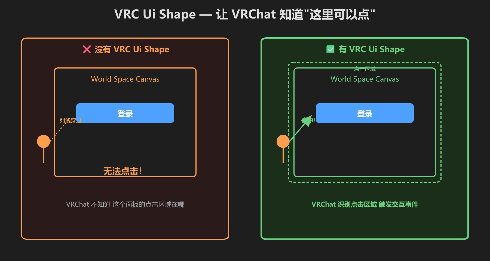
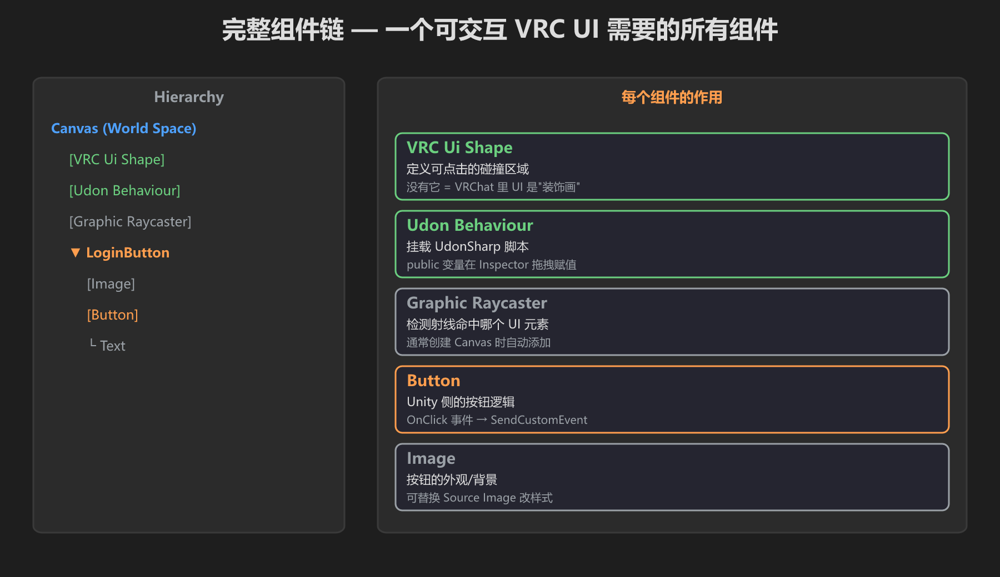
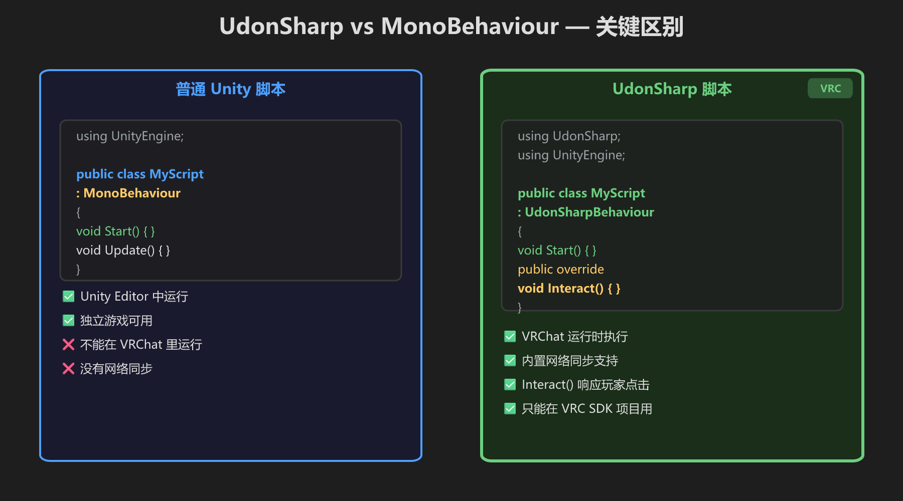
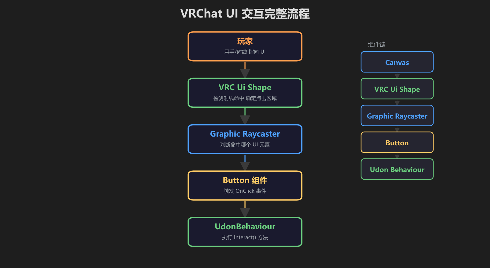
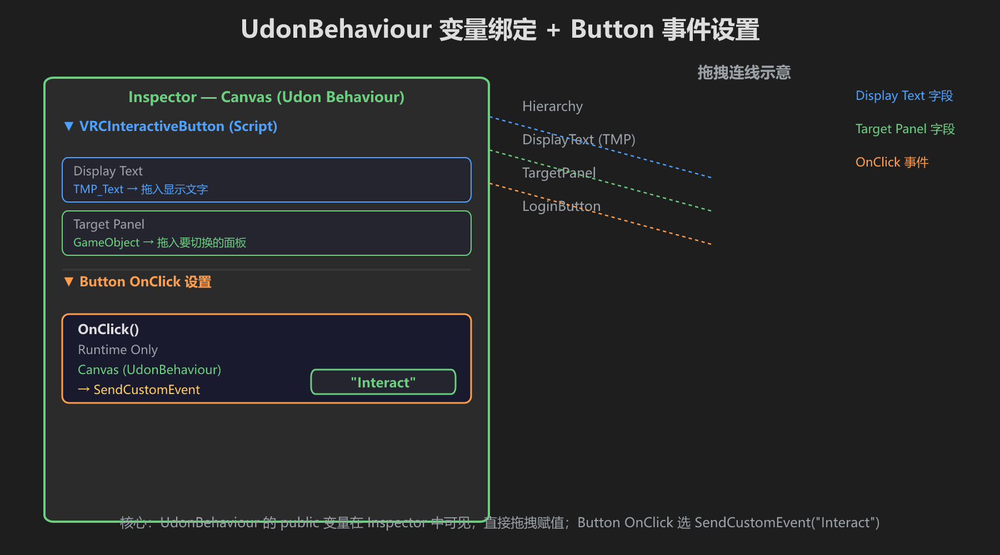
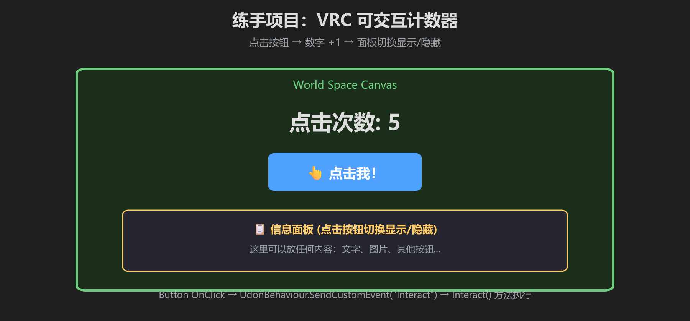

第 8 篇：VRC UI Shape + UdonSharp
上一篇做了 World Space Canvas，但按钮点了没反应？这一篇按 VRChat 官方手册把“能看”变成“能点”。
🛡️ VRC Ui Shape — 让 UI 能被 VRChat 射线命中

没有 VRC Ui Shape = VRChat 里 UI 是“装饰画”，只能看不能点
VRC Ui Shape 是 VRChat 提供的组件，让玩家可以用 VRChat 的指针/射线点击你的 Canvas。它只有一个主要参数：Allow Focus View（是否允许手机/平板玩家放大这个 UI）。
⚙️ 官方推荐：直接用 VRC 预设创建
VRChat 离线手册里最省事的做法是：右键 Hierarchy → UI → TextMeshPro (VRC)。SDK 会自动帮你把 Canvas、VRC Ui Shape、Graphic Raycaster 等必要组件配置好。
如果你要手动配置，至少要满足以下条件：
- 在 Canvas 同一个物体上添加 VRC Ui Shape
- 把 Canvas 的 Layer 从 UI 改成 Default（或其他非 UI 层）
- 把 Canvas 的 Scale 调小到约 0.01（1 像素 ≈ 1 厘米），否则 1 像素 = 1 米会大得离谱
- Render Mode 设为 World Space
- Canvas 上要有 Graphic Raycaster（一般加 Canvas 时自动带上）
- 场景里要有 EventSystem（不要删掉）
- 所有 UI 元素的 Navigation 设为 None
- 文字尽量用 TextMeshPro，不要用 Unity 内置 Text

一个可交互 VRC UI 所需的组件链：Canvas + GraphicRaycaster + VRC Ui Shape + Button/UdonBehaviour
Collider 注意：VRChat 上传世界后会自动为 VRC Ui Shape 加 Box Collider。如果你自己加了一个 Collider，一定要保证它的大小正确；同时不要有其他 Collider 挡住 Canvas。VRC Ui Shape 要放在 Canvas 同一个物体上，不是放在某个子物体上。
📝 UdonSharp vs MonoBehaviour

VRChat 世界里逻辑脚本要继承 UdonSharpBehaviour，而不是普通 MonoBehaviour
普通 Unity 的 UI 事件可以直接调用 MonoBehaviour 的 public 方法。但在 VRChat 世界里，UI 事件只能调用 VRChat 允许的目标方法，最常用的是：
UdonBehaviour.SendCustomEvent("方法名")— 最常用UdonBehaviour.RunProgram()UdonBehaviour.Interact()
所以到 VRChat 阶段，我们通常把逻辑写进 UdonSharp 脚本，再用 Button 的 OnClick → UdonBehaviour.SendCustomEvent("OnClicked") 触发。
🔄 完整交互流程

玩家射线 → VRC Ui Shape → Graphic Raycaster → Button.OnClick → SendCustomEvent → UdonSharp 方法
🔗 变量绑定 + 事件设置

public 变量拖拽赋值 + Button OnClick → SendCustomEvent("OnClicked")
🖥️ 练手：可交互计数器

点击按钮 → 数字 +1 → 面板切换显示/隐藏
using UdonSharp;
using UnityEngine;
using TMPro;
public class VRCInteractiveButton : UdonSharpBehaviour
{
public TMP_Text displayText;
public GameObject targetPanel;
private int clickCount = 0;
void Start() { displayText.text = "点击次数: 0"; }
// 这个方法由 Button.OnClick → SendCustomEvent("OnClicked") 调用
public void OnClicked()
{
clickCount++;
displayText.text = "点击次数: " + clickCount;
if (targetPanel != null)
targetPanel.SetActive(!targetPanel.activeSelf);
}
}- 创建 World Space Canvas，按上面步骤加 VRC Ui Shape、改 Layer、调 Scale
- Canvas 下创建 Text + Button + 一个 Image（InfoPanel，初始隐藏）
- Canvas 加 Udon Behaviour，挂上面的脚本
- 拖拽 Text 和 InfoPanel 到脚本字段
- Button 的 OnClick → 拖 UdonBehaviour → 选
SendCustomEvent→ 填OnClicked
- [ ] Canvas 有 VRC Ui Shape
- [ ] Canvas 的 Layer 不是 UI
- [ ] Canvas Scale 约 0.01
- [ ] Canvas 有 Graphic Raycaster，场景里有 EventSystem
- [ ] 脚本继承 UdonSharpBehaviour
- [ ] 点击按钮数字 +1
- [ ] 点击按钮面板切换显示/隐藏
🔍 常见问题
| 现象 | 原因 / 检查 |
|---|---|
| 指针不出现 | Canvas 上没有 VRC Ui Shape，或 Layer 还是 UI，或 VRC Ui Shape 加到了子物体上 |
| 指针出现但 UI 不响应 | EventSystem 被删了；Canvas 没有 Graphic Raycaster；按钮被别的透明 Image/Text 挡住了 |
| 点击有反应但不是预期行为 | SendCustomEvent 的方法名写错；方法不是 public；方法带了不该带的参数 |
| UI 会跟着移动/按键乱跳 | Navigation 没设 None；Scroll Rect 的 Scroll Sensitivity 没设 0 |